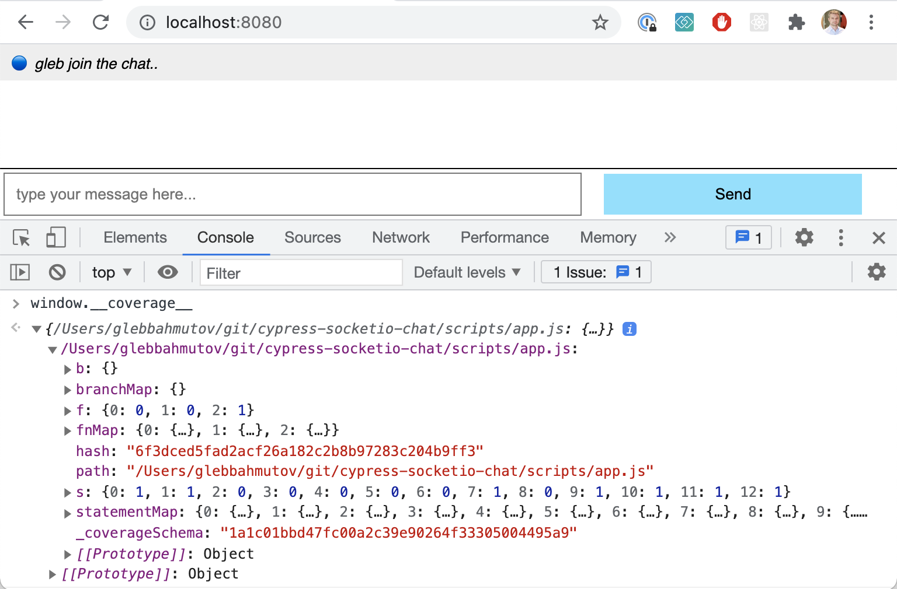
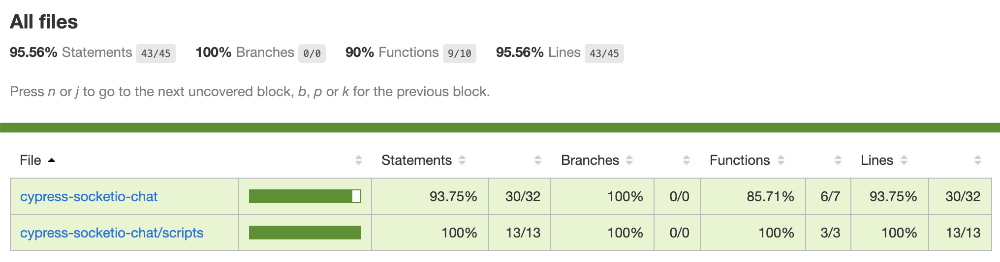
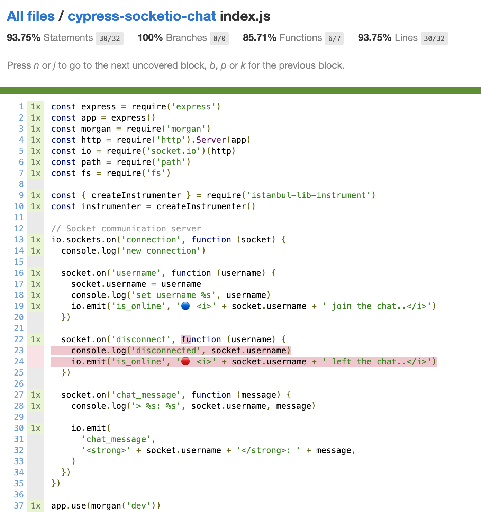
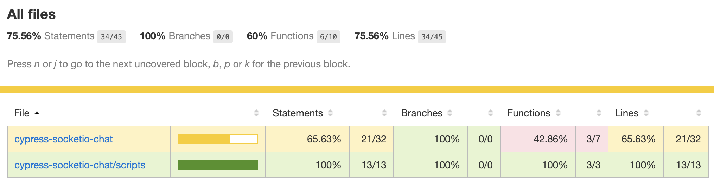
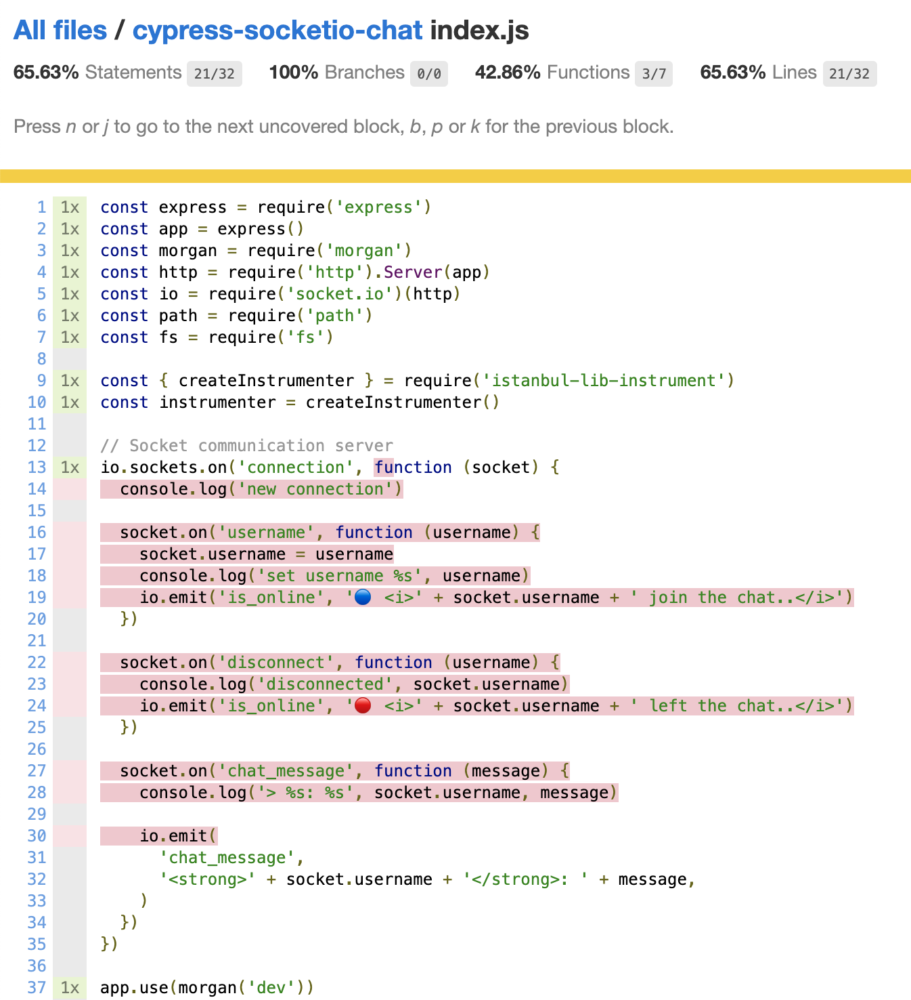
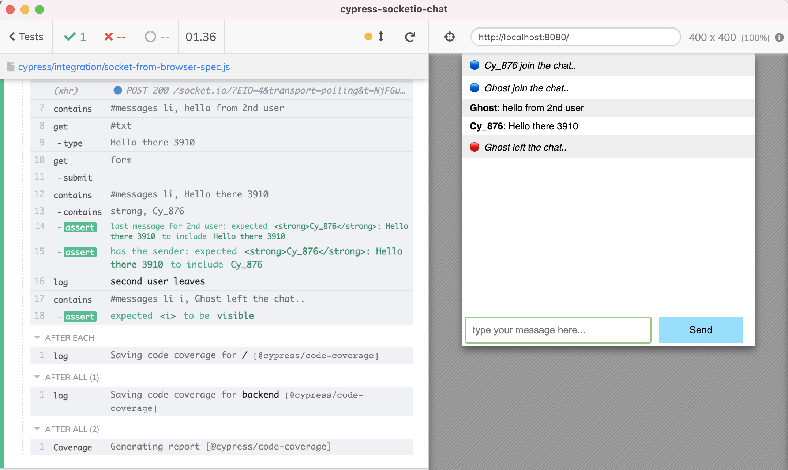
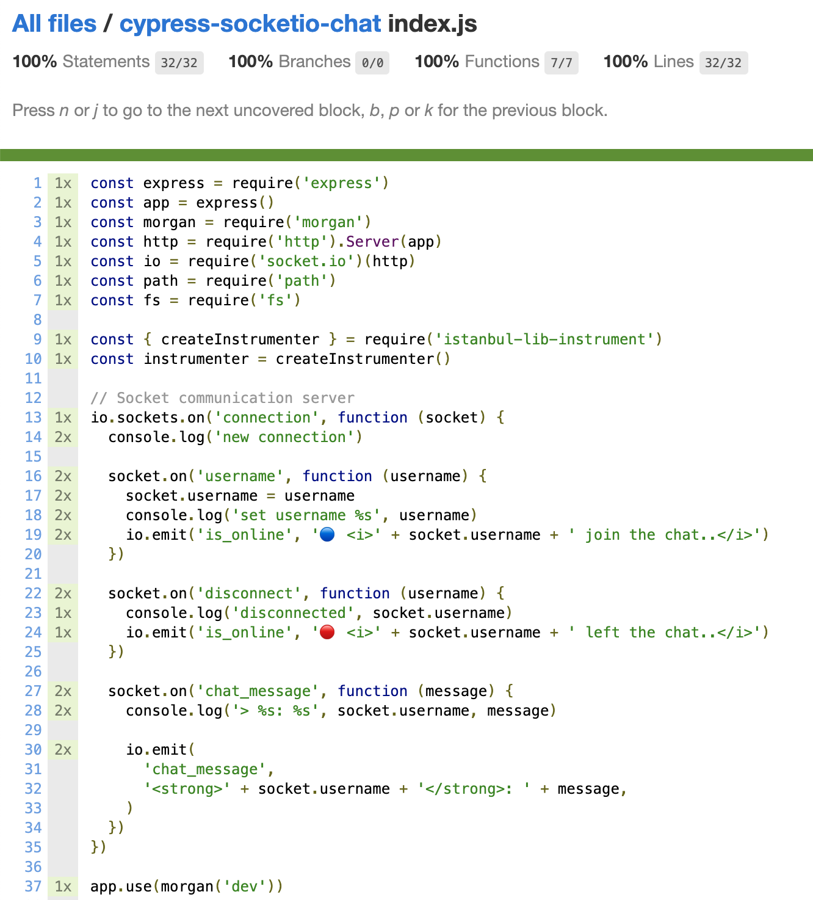

In several blog posts I have shown how to test a Socket.io chat application using Cypress.io
| Title | Description |
|---|---|
| Test a Socket.io Chat App using Cypress | Simulates the second user by connecting to the chat server from the plugins file |
| Run Two Cypress Test Runners At The Same Time | Launches two test runners, giving them separate specs to run |
| Sync Two Cypress Runners via Checkpoints | Launches two test runners, which stay in sync by communicating via their own Socket.io server |
In this blog post I will show how to collect code coverage in each case. From the code coverage reports, we will see that using separate test runners to simulate two users is not necessary. The application code is already exercised when using a separate socket connection to simulate the second user. Even a test with 1 user going through the user interface covers 100% of the code, because every message, even own message, goes through the server before being shown.
üéÅ You can find the source code in the repo bahmutov/cypress-socketio-chat. You can also flip through the slides for the presentation covering this topic at slides.com/bahmutov/e2e-for-chat.
Code instrumentation
The application includes the source code using a script tag
1 | <script src="scripts/app.js"></script> |
From the server, we can instrument the scripts/app.js source code before sending
1 | const { createInstrumenter } = require('istanbul-lib-instrument') |
To check if the code has been instrumented, inspect the window.__coverage__ object from the DevTools console.

We can also instrument the server code using nyc module following the Instrument backend code section of the Cypress docs.
1 | npm i -D nyc |
Change the start server command
1 | - "start": "node .", |
And expose the code coverage endpoint
1 | // https://github.com/cypress-io/code-coverage#instrument-backend-code |
To ensure the code coverage report always includes the client and the server code, add to the package.json "nyc" options
1 | { |
Tip: if you need to instrument your application code, find an example matching your situation among the examples in the Cypress code coverage plugin repo.
The first spec
Our first spec uses a single test runner to send the message to itself.
1 | /// <reference types="cypress" /> |
The generated HTML report shows full client-side code coverage.

Drill down into the server file to see the two missed lines

Unfortunately, it is hard to test the user disconnect if our page is the only one present.
Mock socket spec
In another spec we replace the actual socket connection with the Mock Socket object.
1 | /// <reference types="cypress" /> |
Because we do not run any socket commands on the server, our server-side coverage drops.

The server report shows no socket callbacks have executed.

Second user via socket connection
Let's run the test that uses the UI page as the first user, while connecting to the server through another socket connection to simulate the 2nd user. For example, we can open that 2nd socket connection from the spec.
1 | /// <reference types="cypress" /> |
Note that this test disconnects the second user and confirms the page shows the right message.

The fullstack code coverage achieves 100% for both the client and the server files.

The server really exercised all Socket commands.

Run two test runners
Now let's switch to the more complicated way of verifying the chat between two users - by running two test runners. Does it give us any more confidence? Does it cover any more code lines? Well, it would be hard to cover more lines, since we already have reached 100% code coverage!
We will run two test runners and they will wait for each other using checkpoints. For example, here are the ends of the two spec files where the first user disconnects by going away from the page localhost:8080 and the second user confirms it sees the message "First left the chat"
1 | // disconnect from the chat by visiting the blank page |
1 | // the first user will disconnect now |
The code coverage stays the same: more lines might be repeated, but no new lines can possible be added to the already full coverage.
| Testing approach | Fullstack code coverage percentage |
|---|---|
| Single spec | 95% |
| Mock socket | 75% |
| 2nd user via socket | 100% |
| Run two test runners | 100% |
Happy fullstack testing!